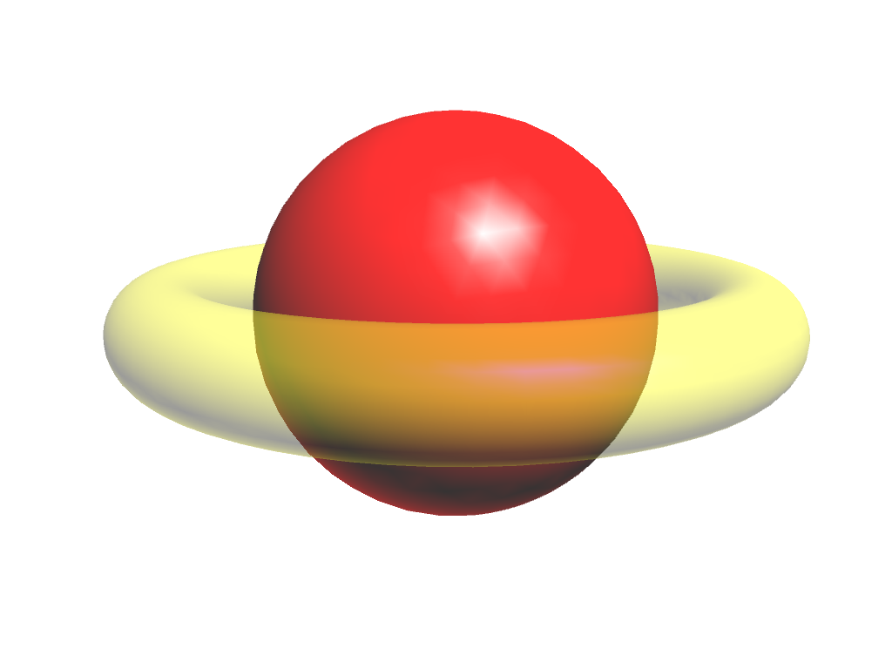
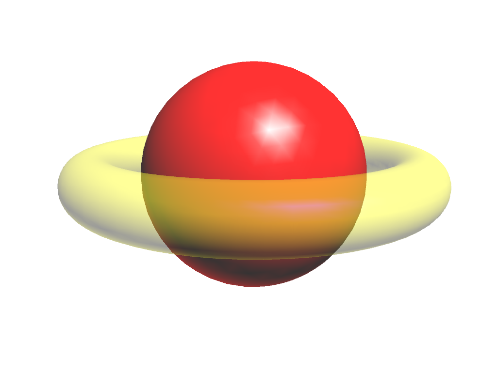

Blending
The yellow torus is transparent. Suddenly, rendering order matters again.
 

On the left, the yellow torus is rendered first. It is written into the depth buffer, so the sphere is not visible where it should be.
On the right, the red sphere is rendered first.
Transparent objects must be rendered after opaque.